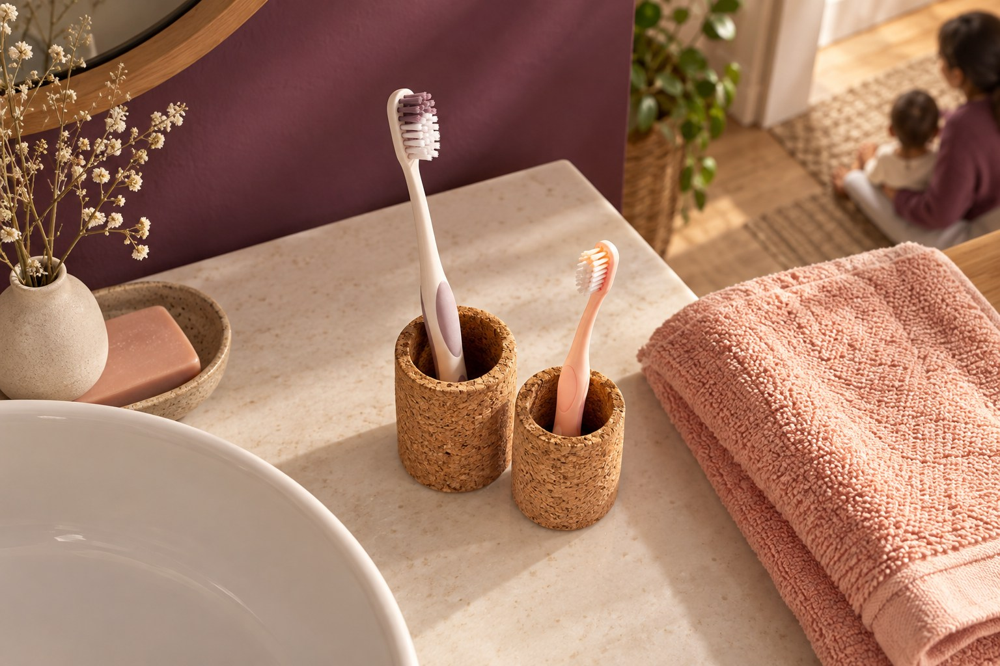

O cuidado conecta a gente.
Elo Odontologia. Conheça os cuidados para adultos e crianças, encontre respostas e prepare o primeiro encontro.
Como começarQuem você quer cuidar hoje?
Escolha um caminho para entender as possibilidades.
Uma boa conversa faz espaço para as suas dúvidas.
Você não precisa chegar com um tratamento escolhido. Entenda como começa o atendimento e o que vale perguntar antes de decidir.
Como começarO espaçoO que acontece no primeiro encontro?
A proposta demonstrada começa com uma conversa sobre o que você procura, seguida da avaliação e da explicação dos próximos passos. O protocolo real deve ser confirmado com a clínica.
Continuar neste assuntoPreciso saber qual cuidado procurar?
Você pode começar descrevendo sua dúvida. A avaliação profissional ajuda a organizar as possibilidades; não é necessário escolher um tratamento pelo site.
Continuar neste assuntoComo confirmar valores e condições?
A equipe da clínica deverá informar valores, formas de pagamento e condições antes da contratação. Este catálogo não apresenta preços fictícios.
Continuar neste assunto